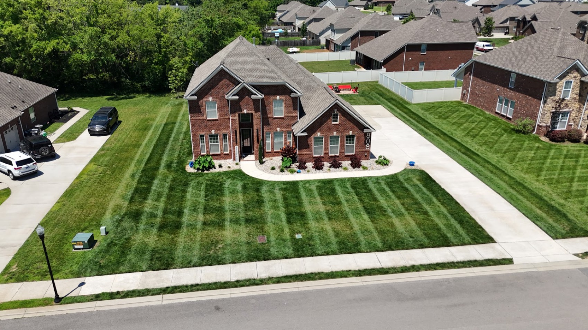
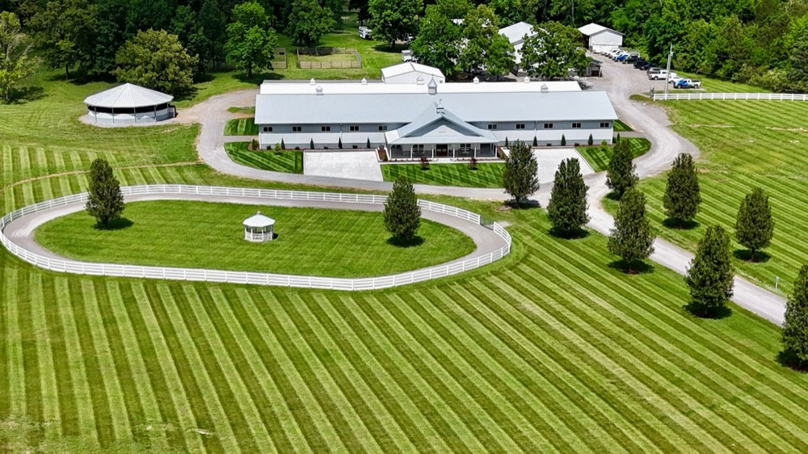
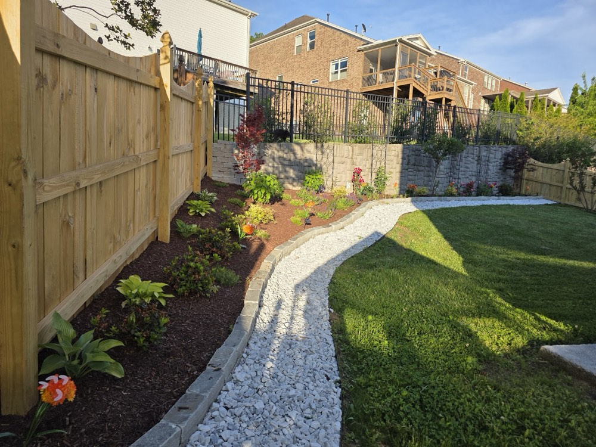
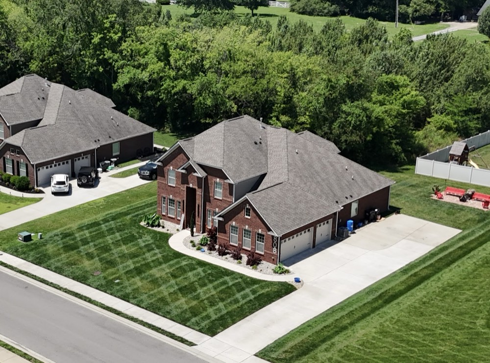

Willow Creek keeps lawns, beds and whole properties looking their best across Murfreesboro and the surrounding area — clean cuts, sharp edges, work done right.

From a single tidy lawn to full-property grounds, the work gets done — and it shows.
Customers say we go over and beyond and leave the yard looking wonderful — visit after visit.
A routine that fits your property, so upkeep happens without you having to chase it down.
A perfect 5.0 across 21 Google reviews from Murfreesboro-area neighbors.
Clean, even mowing with the crisp stripes that keep a property looking cared-for all season long.
Fresh mulch, defined edges and tidy plantings that frame the home and walkways.
River-rock paths and bed work that move water away and add a clean, natural finish.
From a single lawn to estate-scale grounds, we keep the whole property looking its best.



5.0 · 21 Google reviews
"Wes and his crew at Willow Creek Landscape do a fantastic job! They are very professional and always leave my yard looking wonderful!"
"Wes and his crew are great and always go over and beyond."
Call or text and we'll come take a look. Serving Murfreesboro, TN and the surrounding area.